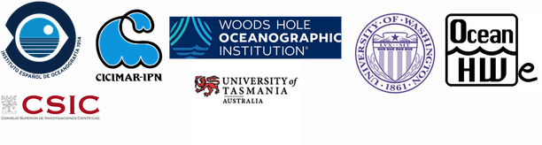

Intercoonecta OHW-es, Hackatón
Intercoonecta OHW-es, Hackatón#
Introducción al uso de software de código abierto aplicado al análisis de datos oceanográficos y gestión pesquera
Autores: Marian Peña, Héctor Villalobos, Alma Carolina Castillo Trujillo, Denisse Fierro Arcos, Emilio Mayorga
Tutoriales de iniciación en lenguajes de programación open source, el entorno de trabajo Jupyter y el trabajo colaborativo con control de cambios con git/github.
